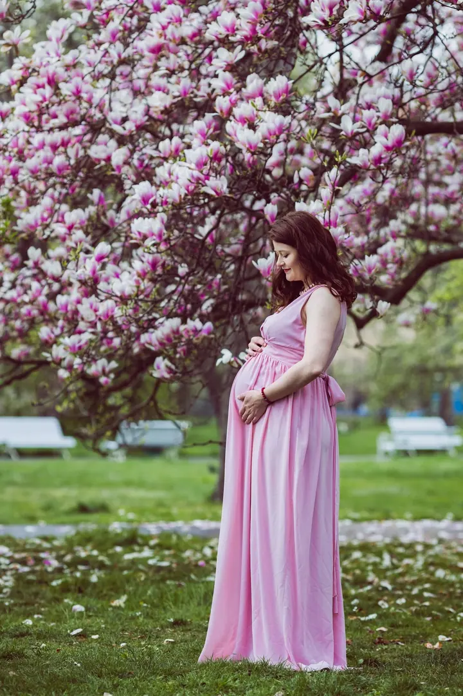

jedna
Svatby
Ceník připravuji na míru vaší svatbě, stačí mi napsat datum. Ráda vyfotím i jen svatební obřad, nemusí to být celý den.

Svatební a rodinná fotografka · Praha, Karlštejnsko, okolí Berounky

Jmenuji se Daniela Lišková a jsem svatební a rodinná fotografka z Prahy. Fotím v Praze a v přírodě kolem hradu Karlštejn a řeky Berounky, nejraději v protisvětle, u rozkvetlých stromů, v obilném poli nebo v lese.
Více o mně
Co fotím
jedna
Ceník připravuji na míru vaší svatbě, stačí mi napsat datum. Ráda vyfotím i jen svatební obřad, nemusí to být celý den.
dvě
Najdu vám nejhezčí lokalitu v Praze a okolí, hlavně pole, louky, sady a rybníky. Focení trvá asi 1,5 hodiny a dostanete minimálně 30 upravených fotografií za 4 300 Kč.
tři
Fotíme venku v přírodě, s dětmi si hraju a váš pejsek je vítaný. Dostanete minimálně 40 upravených fotografií za 4 700 Kč.
Přijedu k vám domů a fotíme v ložnici, obýváku nebo v dětském pokojíčku, klidně i se sourozenci a pejsky. Asi 2 hodiny podle nálady miminka a 30 upravených fotografií za 5 500 Kč.
Nejraději fotím v protisvětle a v přírodě.


Za objektivem
Dřív jsem pracovala v advokátní praxi. Sbírky zákonů jsem vyměnila za digitální zrcadlovku a místo zastupování klientů při rozvodech teď fotím svatby. Je to o mnoho krásnější práce a za sebou jich mám už více než 250.
K focení svateb a rodin jsem se dostala přes akty. V roce 2012 jsem na protest proti kácení zdravých stromů v Tyršových sadech v Pardubicích nafotila kalendář aktů. Zajímala se o něj celostátní média a desítky stromů se podařilo zachránit. Od té doby věřím, že fotografie může změnit svět.
Moje fotky jsou hlavně jemné a ženské. Miluji přírodu i psy, takže váš čtyřnohý mazlíček je na focení vítaný a pamlsky mám vždycky připravené. S dětmi si při focení hraju a nikdy jim neříkám „teď se usměj“.
Daniela
Pošlete mi datum a jaké focení si přejete. U svateb vám obratem pošlu ceník připravený na míru.
V každém ročním období vám najdu nejhezčí místo v Praze nebo okolí, třeba rozkvetlé stromy, louku nebo les u Karlštejna.
Fotím hlavně odpoledne, kdy je na portréty nejkrásnější světlo. Ukážu vám, jak se postavit nebo obejmout, aby fotky vypadaly přirozeně.
Nejlepší fotky vybírám sama a věnuji se kompozici, světlu i tomu, aby vám to slušelo. Svatební fotografie dodávám do 4 týdnů.
Portfolio
Fotografie jsou ilustrační
Otázky
Ano, moc ráda vám vyfotím třeba jen svatební obřad. Celodenní svatební focení nepreferuji jako většina fotografů.
Svatební fotografie dodávám do 4 týdnů. Mimo svatební sezónu je doba zpracování kratší.
Nemusíte mít obavy. Při focení vytvořím příjemnou atmosféru a citlivě vás povedu, jak se postavit, obejmout nebo políbit, aby fotky vypadaly přirozeně.
Ano, a velmi ráda. Miminka fotím výhradně doma, kde se cítí bezpečně a vy nemusíte brzy po porodu nikam cestovat.